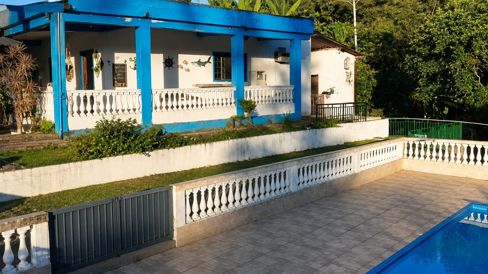
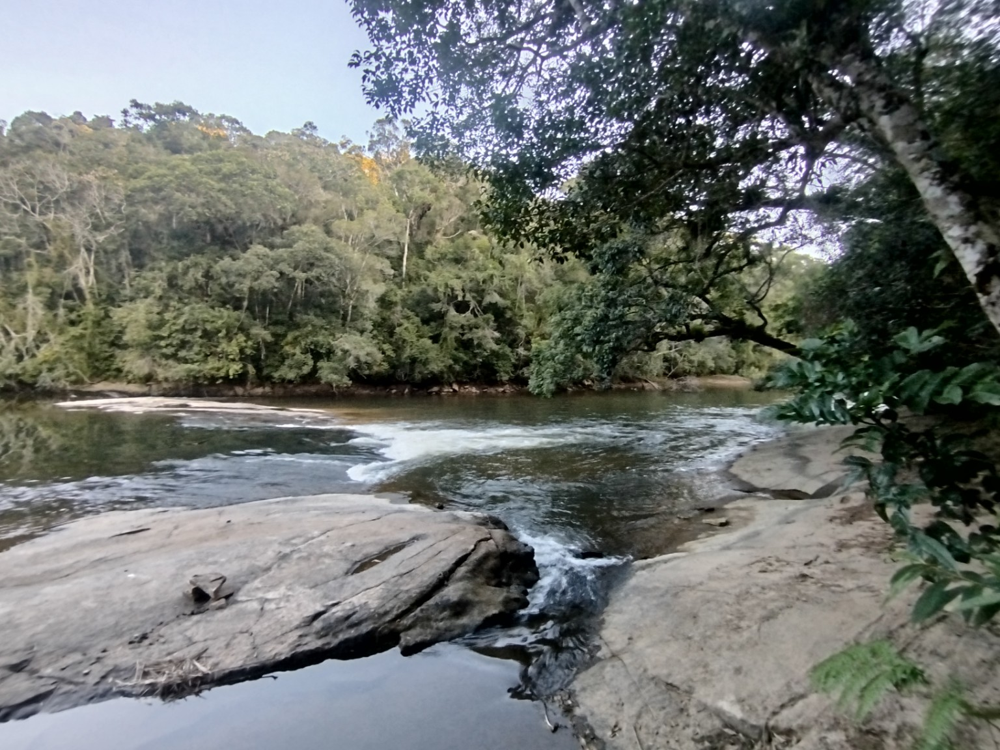
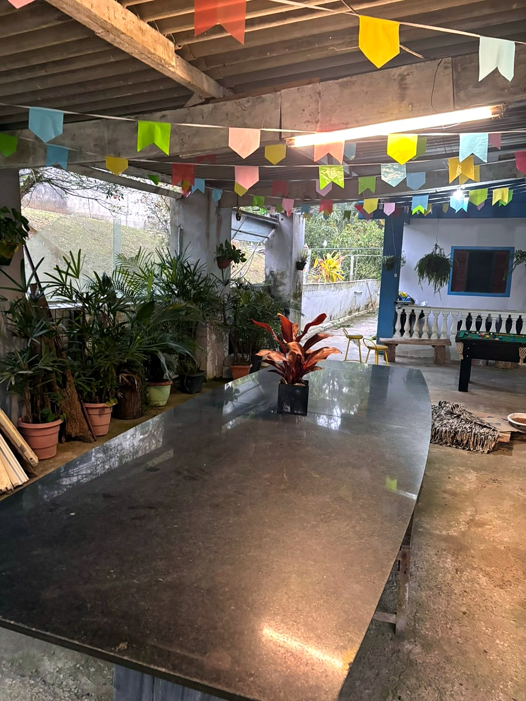
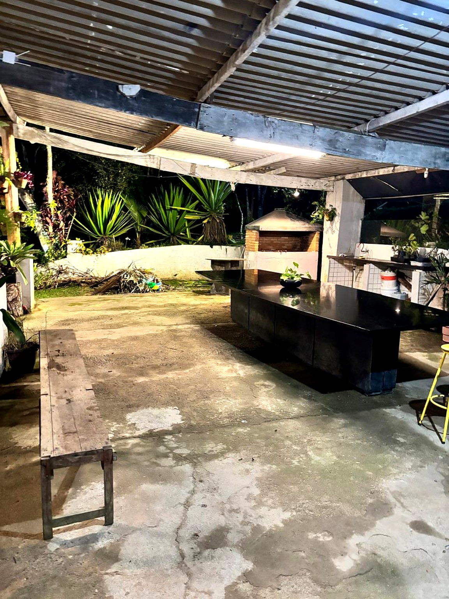

Lazer
Um lugar para descansar, reunir quem você gosta e aproveitar a natureza.

Cercado pela natureza, o Sítio Recanto das Hortências é um espaço pensado para reunir pessoas, descansar e aproveitar bons momentos longe da rotina da cidade.
Aqui, a simplicidade da casa de campo se encontra com espaços de convivência, piscina, churrasqueira, cozinha, sinuca, jardins e muito verde ao redor.
É um lugar para famílias e grupos que procuram tranquilidade, contato com a natureza e liberdade para aproveitar o espaço no próprio ritmo.
Espaços para descansar, cozinhar, reunir a família e aproveitar os dias em meio à natureza.



Conheça alguns dos espaços e paisagens que fazem parte da experiência no Sítio Recanto das Hortências.
Consulte as datas disponíveis e fale diretamente conosco pelo WhatsApp para receber informações sobre valores, períodos e condições da hospedagem.
Consultar disponibilidade pelo WhatsApp